Hướng dẫn sử dụng Lịch nghỉ phép PEC
Mỗi mục có 2 cột: Trên máy tính và Trên điện thoại. Ô khoanh đỏ đánh số là chỗ cần bấm, giải thích theo số ở bên dưới ảnh. Bấm vào ảnh để xem cỡ lớn.
Giới thiệu
Ứng dụng Lịch nghỉ phép PEC giúp mỗi người tự khai ngày nghỉ, lãnh đạo duyệt trên điện thoại hoặc máy tính, và cả Trung tâm biết hôm nay ai vắng mặt.
Địa chỉ: https://ngocdaika.github.io/nghi-phep-pec/ · Ngày làm việc: thứ 2 – thứ 7 (không tính chủ nhật và ngày lễ).
| Vai trò | Xem được | Làm được |
|---|---|---|
| Nhân viên | Hôm nay ai vắng mặt; lịch và tổng kết của chính mình | Khai đơn, hủy đơn đang chờ duyệt |
| Trưởng / Phó phòng | Lịch và tổng kết của cả Trung tâm | Như nhân viên |
| Phó Giám đốc | Như trên, kèm lý do nghỉ của mọi người | Duyệt đơn của các phòng được giao phụ trách |
| Giám đốc | Như trên, kèm lý do nghỉ của mọi người | Duyệt mọi đơn; đổi vai trò, giao phòng cho PGĐ |
| Quản trị | Tất cả | Toàn quyền: nhân sự, mật khẩu, loại nghỉ, ngày lễ |
Đơn của Nhân viên và Trưởng/Phó phòng do PGĐ phụ trách phòng duyệt (phòng chưa giao PGĐ thì Giám đốc duyệt). Đơn của PGĐ do Giám đốc duyệt. Lý do nghỉ chỉ người nghỉ và lãnh đạo từ Phó Giám đốc trở lên (Phó Giám đốc, Giám đốc, Quản trị) xem được.
1. Đăng nhập
Mã nhân sự = tên + chữ đầu của họ và tên đệm, viết thường, không dấu. Ví dụ: Nguyễn Hoàng Khánh Ngọc → ngoc.nhk, Lê Vinh → vinh.l. Trùng mã thì thêm số (ngoc.nhk2). Lần đầu dùng mật khẩu 123456.
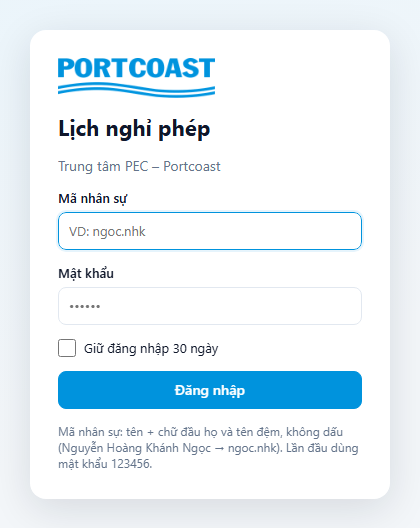
1234- Nhập mã nhân sự.
- Nhập mật khẩu.
- Đánh dấu Giữ đăng nhập 30 ngày nếu là máy của riêng bạn (máy dùng chung thì bỏ trống).
- Bấm Đăng nhập.
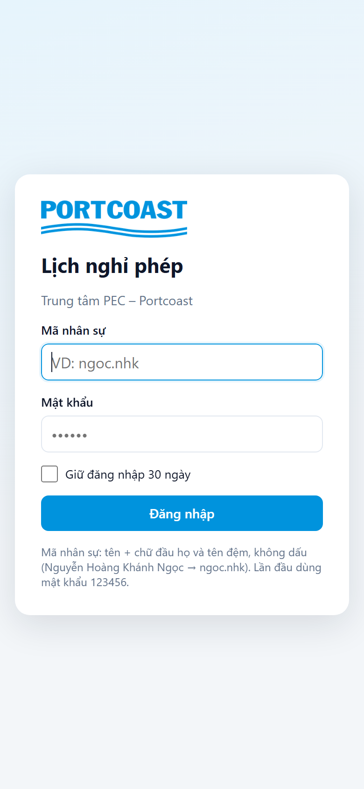
1234- Nhập mã nhân sự.
- Nhập mật khẩu.
- Đánh dấu Giữ đăng nhập 30 ngày để không phải đăng nhập lại.
- Bấm Đăng nhập.
2. Đổi mật khẩu lần đầu
Lần đầu đăng nhập bằng mật khẩu mặc định, ứng dụng yêu cầu đặt mật khẩu riêng (6–32 ký tự, có thể dùng chữ và số). Không nên để mật khẩu toàn số giống nhau hay dãy liên tiếp.
3. Lịch tháng
Màn hình chính. Mỗi dòng là một người, mỗi cột là một ngày; cột ngày hôm nay tô xanh. Kéo ngang trong bảng để xem các ngày khác, kéo dọc để cuộn trang (dòng ngày luôn nằm trên cùng). Nhân viên chỉ thấy dòng của mình và mục Hôm nay vắng mặt; Trưởng/Phó phòng trở lên thấy cả Trung tâm kèm cột tổng ngày nghỉ.
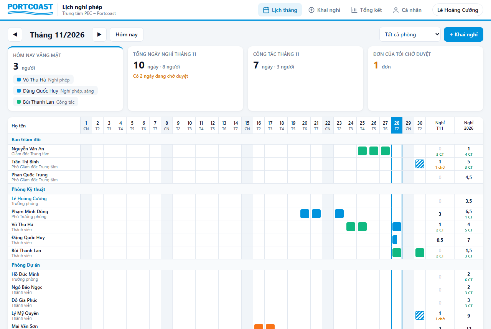
123456- ◀ ▶ chuyển tháng, Hôm nay quay về tháng này.
- Lọc theo phòng.
- Hôm nay vắng mặt: bấm tên để xem chi tiết.
- Bấm + Khai nghỉ để tạo đơn.
- Bấm tên một người để xem các đơn của người đó trong năm.
- Bấm ô màu để xem chi tiết ngày nghỉ.
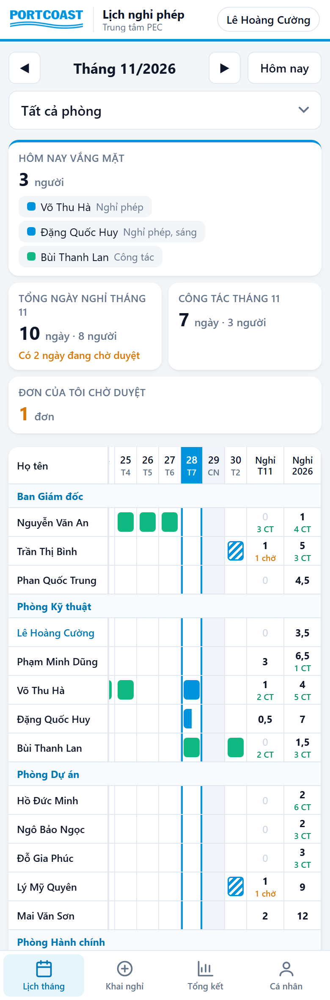
12345- ◀ ▶ chuyển tháng, Hôm nay quay về tháng này.
- Chạm để chọn phòng cần xem.
- Hôm nay vắng mặt: chạm tên để xem chi tiết.
- Thanh dưới cùng: chạm Khai nghỉ để tạo đơn.
- Chạm tên để xem đơn của người đó; chạm ô màu để xem chi tiết. Vuốt ngang trong bảng để xem các ngày khác.
4. Khai nghỉ
Chủ nhật và ngày lễ tự bỏ qua. Nghỉ nửa ngày: chọn Từ chiều ở ngày đầu hoặc Hết buổi sáng ở ngày cuối. Đơn mới ở trạng thái Chờ duyệt (ô sọc trên lịch) cho đến khi được duyệt.
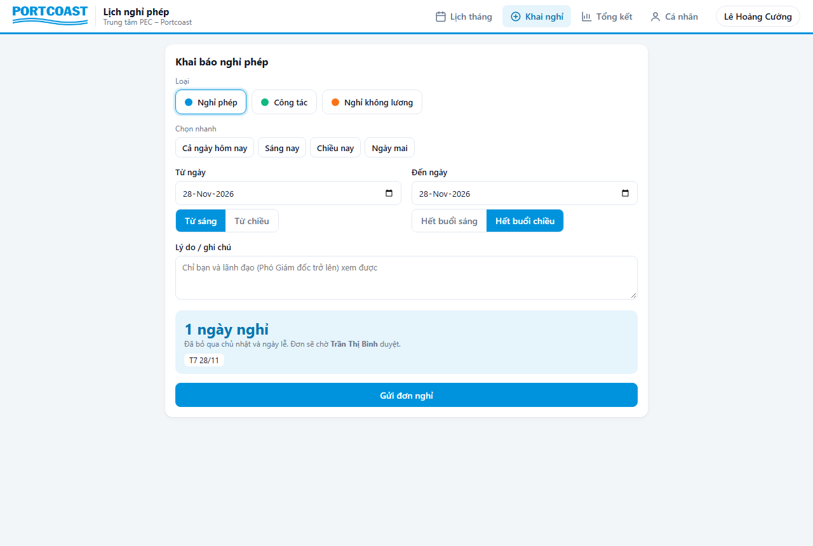
123456- Chọn loại: Nghỉ phép, Công tác hoặc Nghỉ không lương.
- Chọn nhanh: cả ngày hôm nay, sáng nay, chiều nay, ngày mai.
- Hoặc chọn Từ ngày – Đến ngày và buổi.
- Ghi lý do (chỉ bạn và lãnh đạo từ Phó Giám đốc trở lên xem được).
- Kiểm tra số ngày nghỉ và người sẽ duyệt.
- Bấm Gửi đơn nghỉ.
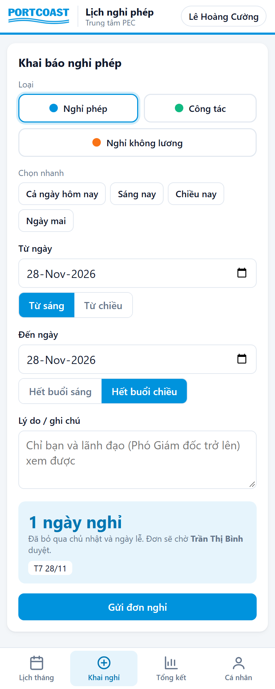
123456- Chọn loại.
- Chọn nhanh ngày phổ biến.
- Hoặc chọn Từ ngày – Đến ngày và buổi.
- Ghi lý do (chỉ bạn và lãnh đạo từ PGĐ trở lên xem được).
- Kiểm tra số ngày và người duyệt.
- Chạm Gửi đơn nghỉ.
5. Duyệt đơn (PGĐ, Giám đốc, Quản trị)
Tab Duyệt chỉ hiện với người có quyền duyệt; số đỏ là số đơn đang chờ. Mỗi đơn kèm số ngày người đó đã nghỉ trong năm để tham khảo.
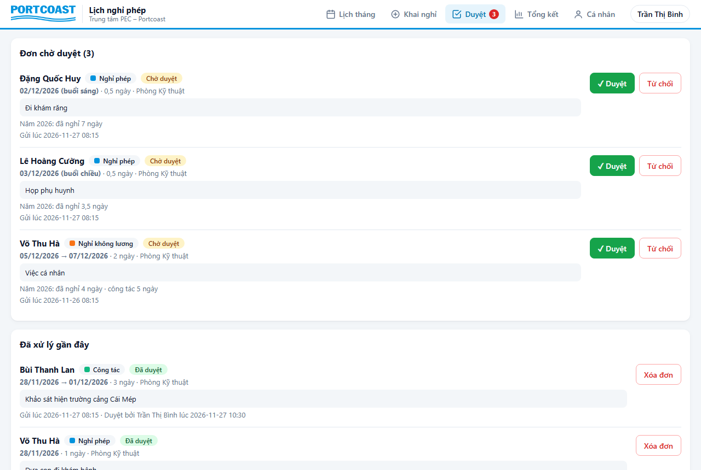
123- Mở tab Duyệt.
- Bấm ✓ Duyệt để đồng ý.
- Bấm Từ chối và ghi lý do (người nghỉ sẽ thấy).
6. Tổng kết
Tổng ngày nghỉ theo tháng hoặc năm, theo từng loại, từng người. Công tác được đếm riêng, không cộng vào ngày nghỉ. Nhân viên chỉ thấy số liệu của mình.
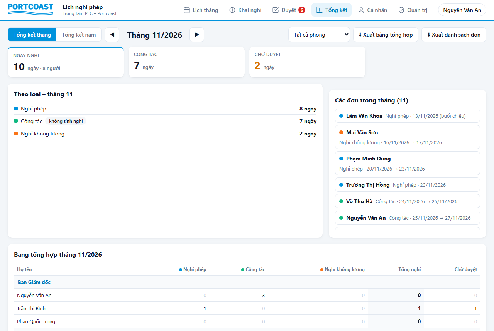
1234- Chọn Tổng kết tháng hoặc Tổng kết năm.
- ◀ ▶ chuyển tháng / năm.
- Lọc theo phòng.
- Xuất bảng tổng hợp hoặc danh sách đơn ra file CSV, mở bằng Excel.
7. Cá nhân – đơn của tôi, đổi mật khẩu, đăng xuất
Bấm vào tên của bạn ở góc trên bên phải (hoặc tab Cá nhân). Đổi mật khẩu xong, các máy khác đang đăng nhập tài khoản của bạn sẽ phải đăng nhập lại.
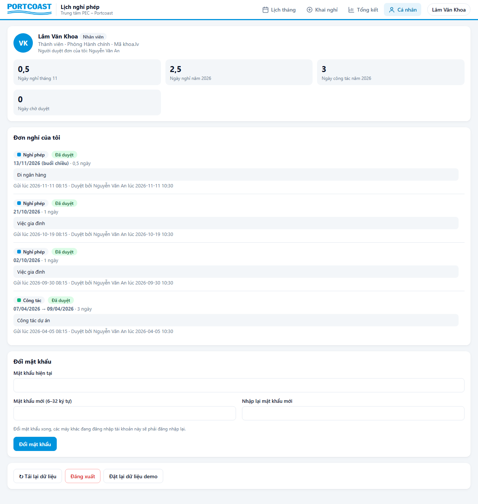
1234- Thông tin của bạn và người duyệt đơn của bạn; số ngày nghỉ tháng / năm.
- Đơn nghỉ của tôi: đơn đang chờ duyệt có nút Hủy đơn.
- Đổi mật khẩu: nhập mật khẩu hiện tại và mật khẩu mới.
- Đăng xuất (nhớ đăng xuất trên máy dùng chung).
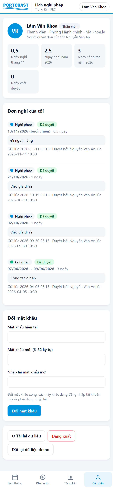
1234- Thông tin và người duyệt đơn của bạn.
- Đơn nghỉ của tôi, hủy đơn đang chờ.
- Đổi mật khẩu.
- Đăng xuất.
8. Quản trị (Quản trị viên, Giám đốc)
Quản trị viên quản lý toàn bộ tài khoản, loại nghỉ và ngày lễ. Giám đốc đổi được vai trò giữa Nhân viên, Trưởng/Phó phòng và Phó Giám đốc, và giao phòng phụ trách cho PGĐ.
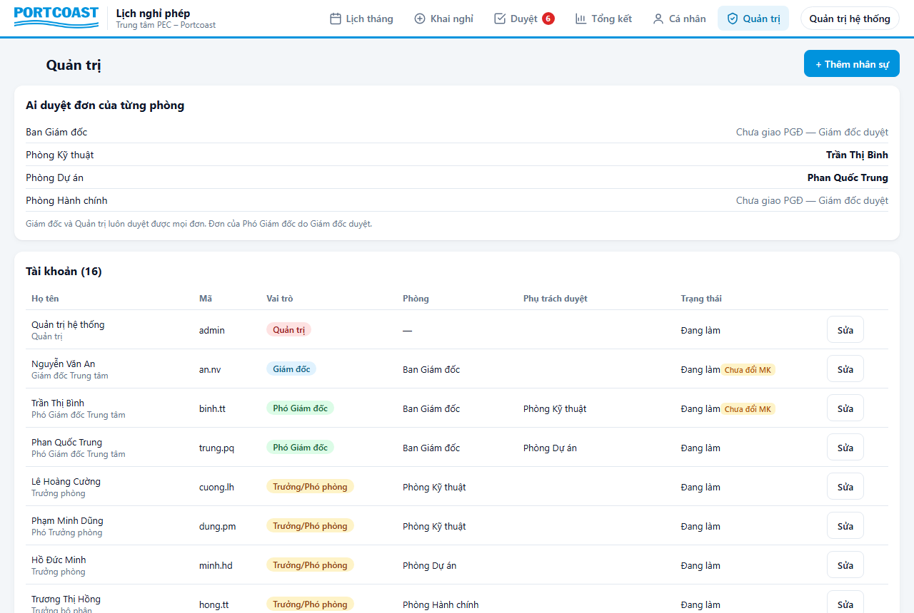
1234- + Thêm nhân sự: để trống ô mã thì hệ thống tự tạo (dạng
ten.hodem), mật khẩu ban đầu123456. - Ai duyệt đơn của từng phòng: phòng chưa giao PGĐ thì Giám đốc duyệt.
- Chưa đổi MK: người này chưa đăng nhập lần nào; nhắc họ đăng nhập và đổi mật khẩu.
- Sửa: đổi vai trò, giao phòng phụ trách cho PGĐ, đặt lại mật khẩu (về 123456), chuyển trạng thái Nghỉ việc.
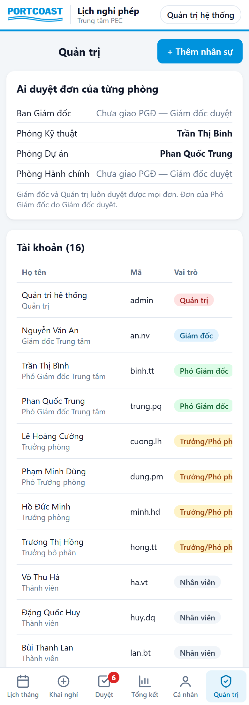
12- + Thêm nhân sự.
- Ai duyệt đơn của từng phòng.
- Kéo ngang bảng Tài khoản để thấy nhãn Chưa đổi MK và nút Sửa.
9. Đưa ứng dụng ra màn hình (lối tắt / nút app)
Sau khi cài, ứng dụng có biểu tượng Portcoast, mở bằng một chạm như phần mềm bình thường, không cần nhớ địa chỉ web. Lần đầu mở từ biểu tượng có thể phải đăng nhập lại một lần — nhớ đánh dấu Giữ đăng nhập 30 ngày.
Google Chrome (Windows)
- Mở trang https://ngocdaika.github.io/nghi-phep-pec/, bấm nút ⋮ ở góc trên bên phải.
- Chọn Truyền, lưu và chia sẻ.
- Chọn Tạo lối tắt… (nếu thấy Cài đặt trang… / biểu tượng cài đặt ở cuối thanh địa chỉ thì bấm vào đó cũng được).
- Đánh dấu Mở dưới dạng cửa sổ.
- Bấm Tạo.
Microsoft Edge
- Bấm nút … ở góc trên bên phải.
- Chọn Ứng dụng.
- Chọn Cài đặt trang web này dưới dạng ứng dụng.
- Bấm Cài đặt.
Kết quả
Biểu tượng Portcoast xuất hiện trên màn hình nền (Desktop). Bấm đúp để mở, ứng dụng chạy trong cửa sổ riêng như phần mềm. Muốn ghim xuống thanh tác vụ: mở ứng dụng → chuột phải vào biểu tượng ở thanh tác vụ → Ghim vào thanh tác vụ.
iPhone / iPad (Safari)
- Mở trang bằng Safari (nếu bấm link trong Zalo/Messenger, chọn Mở bằng Safari trước). Chạm nút Chia sẻ (ô vuông có mũi tên lên, ở thanh dưới; trên iOS mới có thể nằm trong nút •••).
- Kéo xuống, chọn Thêm vào MH chính (Add to Home Screen).
- Chạm Thêm ở góc trên bên phải.
Android (Chrome)
- Mở trang bằng Chrome, chạm nút ⋮ ở góc trên bên phải.
- Chọn Thêm vào màn hình chính (có máy ghi Cài đặt ứng dụng).
- Chạm Thêm (hoặc Cài đặt). Biểu tượng Portcoast Nghỉ phép PEC xuất hiện trên màn hình chính.
10. Câu hỏi thường gặp
- Quên mật khẩu?
- Báo Quản trị viên đặt lại. Mật khẩu trở về
123456, đăng nhập rồi đặt mật khẩu mới. - Báo "Nhập sai mật khẩu quá 5 lần"?
- Tài khoản tạm khóa 15 phút để chống dò mật khẩu. Chờ 15 phút rồi thử lại.
- Không thấy tab Duyệt / Quản trị?
- Các tab này chỉ hiện với người có quyền (PGĐ được giao phòng, Giám đốc, Quản trị).
- Gửi nhầm đơn?
- Vào Cá nhân → Đơn nghỉ của tôi, bấm Hủy đơn khi đơn còn chờ duyệt. Đơn đã duyệt thì nhờ người duyệt hủy giúp.
- Dùng máy tính chung?
- Không đánh dấu Giữ đăng nhập 30 ngày, và bấm Đăng xuất ở tab Cá nhân sau khi dùng.
- Màn hình hiển thị bản cũ?
- Đóng hẳn trang / ứng dụng rồi mở lại, hoặc kéo xuống để tải lại.